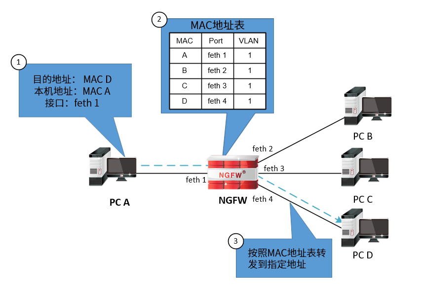
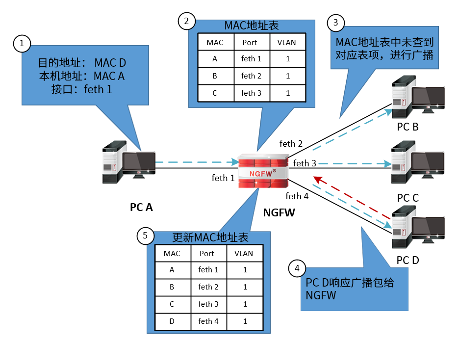

当接口工作在交换模式时，会根据MAC地址表来对报文进行转发。MAC地址表的表项包含MAC地址、VLAN、转发的物理接口号。设备在转发报文时，将首先查询MAC地址表项中是否包含与目的MAC地址匹配的表项，如果有匹配的表项，则将报文通过相应的端口进行转发；如果没有相应的匹配项，则采取广播方式向除接收端口外的所有接口转发该数据报文。
当NGFW进行报文转发时，根据MAC地址表中是否包含报文的目的地址可进行如下几类处理。
l如果MAC地址表中存在目的MAC地址表项，则按照MAC地址表进行单播转发。

l如果MAC地址表中不存在目的MAC地址表项，或者报文的目的地址为广播地址，则在该广播域中进行广播转发。如果在广播域中存在目的MAC地址，目的设备响应广播包，NGFW将目的地址加入到MAC地址表中；如果广播域中没有设备响应，则再有报文的目的地址为该MAC地址时，依然进行广播。

MAC地址表中的表项包括静态表项和动态表项两种：
l静态表项
静态表项由管理员配置，不会随着时间而老化。
l动态表项
动态MAC表项由设备自动生成并更新，无需管理员配置。交换接口接收到数据帧时，分析收到数据帧中的源MAC地址，如果MAC地址表中包含该MAC地址对应的表项则更新表项；如果MAC地址表中没有该表项，则建立该地址同端口的映射，并将其写入MAC地址表中，生成新的动态MAC表项。
NGFW支持添加和删除静态表项，并对动态表项进行查看。